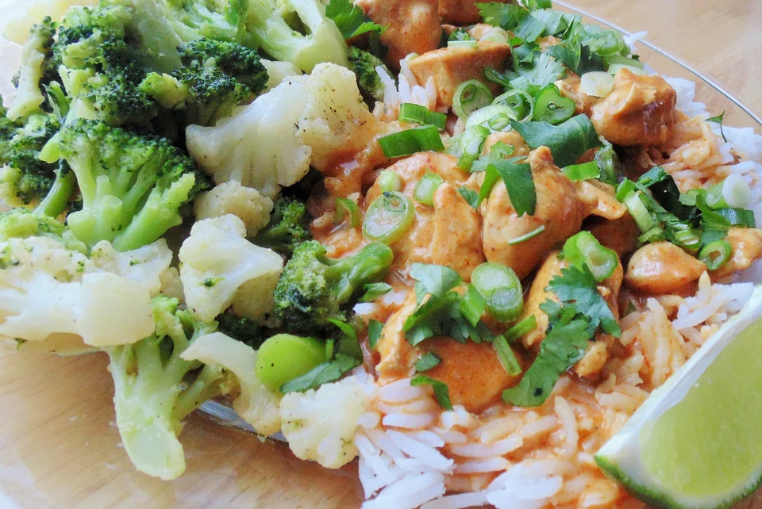

Red Curry Chicken

Follow this recipe to make Red Curry Chicken
Five-ingredient red curry chicken with noodles is easy, quick, and inexpensive to make. Sweetened with coconut milk for unbelievable flavor! Top with chopped cilantro, green onions, and red chile peppers if desired.
Igredients:
- 2 tablespoons coconut oil
- 1 (16 ounce) package skinless, boneless chicken breast halves, cut into small cubes
- 1 (14 ounce) can cream of coconut (such as Trader Joe's® Extra Thick and Rich)
- 1 (11 ounce) bottle red Thai curry sauce (such as Trader Joe's®)
- ½ (16 ounce) package dried rice stick vermicelli noodles
Steps:
- Heat oil in a large skillet on high heat. Add chicken cubes; cook until browned, about 2 minutes per side. Reduce heat to medium-high and add coconut cream and curry sauce. Cook until chicken is no longer pink in the center and the juices run clear, about 5 minutes. An instant-read thermometer inserted into the center should read at least 165 degrees F (74 degrees C).
- Fill a large pot with lightly salted water and bring to a rolling boil; stir in vermicelli pasta and return to a boil. Cook pasta uncovered, stirring occasionally, until the pasta is tender yet firm to the bite, 4 to 5 minutes. Drain.
- Reduce skillet heat to simmer. Add the noodles and let simmer until flavors are absorbed, about 5 minutes. Divide chicken and noodles among individual serving bowls.